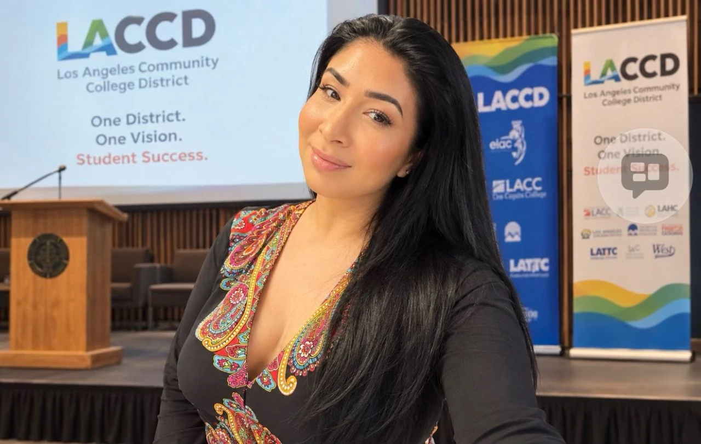

Leadership & strategy.
Organizational planning, fiscal stewardship, board governance, and institutional advancement across education, healthcare, and nonprofits.

DR. REYNA TRUJILLO · EDUCATOR. LEADER. CONNECTOR.
“Our greatest legacy is not what we build for ourselves, but what we make possible for others.”
— Dr. Reyna Trujillo
A connected practice
Executive strategy, teaching, and cross-sector collaboration—grounded in more than two decades of service.
Organizational planning, fiscal stewardship, board governance, and institutional advancement across education, healthcare, and nonprofits.
Workforce pathways, curriculum development, faculty learning, and responsible AI adoption that connect education with changing community needs.
Executive coaching, mentorship, entrepreneurship ecosystems, and partnerships among colleges, employers, government, and philanthropy.
 Reyna Trujillo, Ed.D.
Reyna Trujillo, Ed.D.Meet Reyna
Dr. Trujillo is an executive leader, educator, entrepreneur, and founder working at the intersection of higher education, workforce development, and community opportunity.
As Founder and Principal Consultant of Trujillo Strategy & Innovation Group, LLC, she advises organizations on strategy, organizational assessment, curriculum, workforce planning, grant strategy, and leadership development.
Download full CV ↓Selected leadership & initiatives
Executive Director of a regional hub for entrepreneurship, workforce development, innovation, and economic mobility.
Oversees approximately $2.5M in state appropriations and an additional $2M in sustainability funding. Directs strategy, budgets, staffing, partnerships, and organizational performance.
Founder, President & CEO advancing digital equity and access to community resources through regional collaboration.
Conceived Community Linked Sources®, an AI-powered resource navigation platform connecting residents with verified health, education, workforce, housing, and community resources. Oversees an approximately $1.5M annual operating budget.
Strong Workforce Program Coordinator supporting CTE, adult education, and regional economic mobility.
Stewards more than $6M in workforce investments, including SWP, CAEP, and Perkins V initiatives. Develops pathways and certificates in healthcare, AI, construction, business, and workforce readiness.
Two $25,000 endowments supporting educational access, persistence, and opportunity.
The Pathways to Possibility Endowment at West Los Angeles College Foundation supports noncredit and adult education students. The Legacy Scholarship Endowment at East Los Angeles College Foundation supports achievement, persistence, and leadership development.
Senior Director, Workforce Development · AltaMed Health Services
Enterprise workforce strategy, talent development, healthcare career pathways, and an approximately $6M annual operating budget.
Dream Resource Center Coordinator · East Los Angeles College
Educational access, student support, districtwide Safe Zone training, and community partnerships.
Science education & youth leadership
K–5 teaching at Sierra Park Elementary School and more than 13 years with Girls Inc. of Greater Los Angeles.
Education & scholarship
Ed.D., Organizational Leadership — University of La Verne
M.Ed., Leadership and Administration — University of Southern California
B.S., Child Development — University of La Verne
Adjunct professor teaching child development, healthcare pathways, leadership, and workforce education at East LA, West LA, and LA Valley colleges. Credit, noncredit, continuing education, and dual enrollment.
Doctoral research: From Compliance to Transformation: Faculty Perspectives on AI-Driven Professional Development.
The Spinning Eddy: completed memoir in editorial development.
Stewardship of Stories: leadership book in development.
Start a collaboration
Share enough context to start a useful conversation.
Tell Dr. Trujillo about your organization, audience, idea, or professional goal.
Discuss the relevant expertise, scope, timing, and potential collaboration.
Confirm meeting arrangements and any project details directly by email.
Questions
Executive consulting, strategic planning, workforce development, curriculum and certificate design, grant strategy, AI integration, executive coaching, speaking, and facilitation.
Yes. Use the meeting or coaching inquiry below to share your goals and preferred times. Availability and arrangements are confirmed by email.
Use the giving or sponsorship inquiry to identify the initiative you would like to support. Ask for the relevant organization’s official contact and giving process.
Download Dr. Trujillo’s complete 2026 curriculum vitae. Professional references and letters of recommendation are available upon request.
Reyna Trujillo, Ed.D.